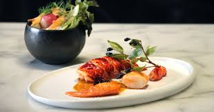
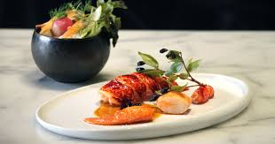

Culinary Arts Institute
Welcome to Culinary Arts Institute, our esteemed International Culinary Arts School situated in Westlands in the city of Nairobi, Kenya. As a leading Catering Training establishment, we take pride in our distinguished reputation and commitment to Culinary Excellence. Culinary Arts is the art of preparing, cooking, and presenting food. Explore different cuisines and become a master chef!


 
